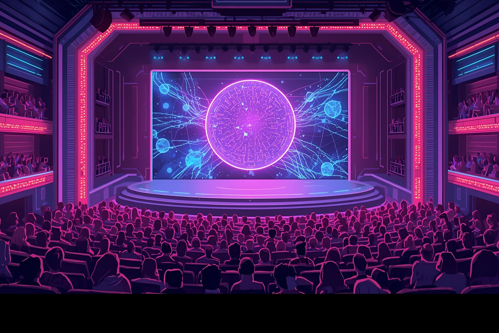
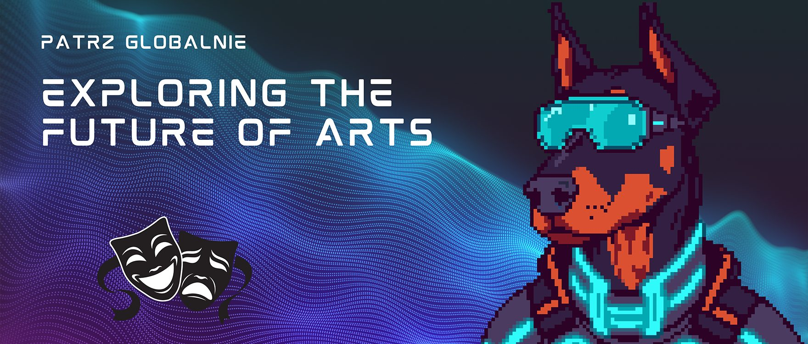
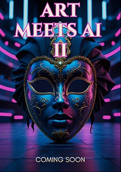

Erasmus+ project · Project story
Art Meets AI 2.0: The Next Act
In a world where AI is threatening the world order, observing and learning is our last option.
- When
- 2025–2026
- Where
- Krosno, Poland
- From
- Poland, Bulgaria, Türkiye, Moldova
- Audience
- 1,000+ students, teachers and locals
01
The next act
Fundacja Patrz Globalnie is launching Art Meets AI 2.0: The Next Act, the continuation of last year’s acclaimed Erasmus+ project Art Meets AI: Exploring New Forms of Performance.
This new edition explores how artificial intelligence has advanced in just one year and how those changes are transforming artistic creation. It challenges young people to use technology creatively, responsibly and ethically.

02
On stage with AI
The project gathers young artists, performers and innovators from across Europe to experiment with the newest AI tools in the performing arts. We will explore voice generation, real-time scriptwriting and visual creation, learning how to blend digital innovation with human imagination.
Our work will end in a live AI-enhanced theatre performance in Krosno, Poland, for over 1,000 students, teachers and locals, showing the evolving relationship between creativity and technology.

03
Collaboration across borders
Participants come from Poland, Bulgaria, Türkiye and Moldova, uniting diverse talents and perspectives in one creative journey. Each country brings its own artistic identity, cultural depth and vision for the future.
Together, these young creators will explore how technology can connect people across borders, inspiring a shared European dialogue on creativity, ethics and innovation.
04
Learning beyond the stage
Alongside the artistic work, Art Meets AI 2.0 puts learning, reflection and collaboration first. Through workshops, discussions and cultural evenings, participants will explore AI’s impact on ethics, privacy and society while developing leadership, teamwork and digital literacy.
The experience will help them overcome stage fright, strengthen communication, and take on complex global questions through creativity.
05
Join us
If you’re passionate about creativity, technology and international collaboration, Art Meets AI 2.0 is the perfect opportunity to get involved. We welcome young people eager to explore where art meets artificial intelligence, learn through hands-on experience, and share ideas with peers from across Europe.
Whether you’re an artist, a performer, or simply curious about the future of AI, join us on this journey, where imagination meets technology and creativity knows no limits.